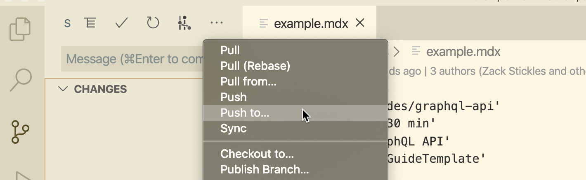
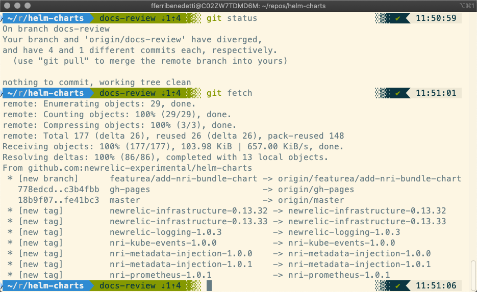

The New Relic Developer docs are part of our documentation ecosystem. To edit content on the developer docs' website, you have to create or edit Markdown files in an open source code repository hosted on GitHub. This docs-as-code procedure requires a different set of tools than Drupal.
To edit the developers website you need the following:
To test the site locally, you will need node.js installed on your machine. The easiest way to get it is to install Homebrew (a macOS package manager) and fetch node.js and npm from there.
Install Homebrew:
/bin/bash -c "$(curl -fsSL https://raw.githubusercontent.com/Homebrew/install/master/install.sh)"
Install node.js and npm:
brew update
brew install node
Test that node.js and npm are installed correctly by installing a simple package globally:
npm install -g hello-world-npm
To fix issues with Homebrew, run brew doctor .
Homebrew and npm are routinely used by our developers — they're approved by IT and Security.
Before starting to use git, you should set your username and email address as global settings. To do so, open the terminal and type the following commands:
git config --global user.name "Your name here"
git config --global user.email "Your_email@example.com"
That will associate your commits to your GitHub username and email. You should also set up an SSH key before pulling and pushing data from/to GitHub: it's safer and you won't have to re-type your password.
The Developer Experience team requests that New Relic employees work in a branch off of the developer-website repo. So you will clone the repo, create a working branch, and push that to GitHub. Note they have contributor's guidelines on the repo.
git clone git@github.com:newrelic/developer-website.git
Or this command if you're using HTTPS:
git clone https://github.com/newrelic/developer-website.git
Git clones the repository onto your machine. You'll be on the main branch, which is the branch that is published to the developer.newrelic.com site.
for example: cd documents/github/developer-website
2. Create a new branch:
git checkout -b BRANCHNAME
You should be in the new branch. To check, run git branch If you need to switch to the branch you created, run git checkout BRANCHNAME
Start working in the src/markdown-pages folder on your machine.
Visual Studio Code is a popular code editor. It's extensible and has built-in support for both Markdown and git — it will make your life a lot easier when editing code that is hosted on GitHub.
In Visual Studio Code, go to File > Open, navigate to the root folder of the repo, and click Open. That will open the repo as a workspace, and you'll be able to navigate its structure.
Once the folder structure is visible, open src > markdown-pages. Clicking a file will open a tab in Visual Studio Code, with the content ready to be edited.
Visual Studio Code is smart about git repositories, and checks automatically what branch are you on and what have you changed. Look at the status bar at the bottom-left corner of Visual Studio Code — you should see that you're on the main branch (unless you've already created one) (note that this used to be master and is now main).

Working on a different branch is cleaner. To create a new branch from Visual Studio Code, hit the master button you've just seen: a menu will appear at the top. This menu not only allows to create new branches, but also to switch between branches with a couple clicks. Hit Create new branch from:

Write a recognizable name, then select which branch are you starting from (hint: it's master). Now check again the bottom-left half of the editor: you should be on the newly created branch.
Every time you save, move, delete, or alter files and folders in the branch, git records those changes in its log. Visual Studio Code lets you watch what happens from its Source Control view.

To save any meaningful changes to the code, you must commit, which is akin to logging changes in a diary. When you commit, you are telling git to remember what changed since the last time and why. You can commit directly from Visual Studio Code by typing a message and hitting the check button:

Commit often and write meaningful commit messages. Since commits can be undone, cherry-picked, and accessed individually, having lots of commits in your repo lets you go back and forth in time effortlessly.
All changes are done, and all have been committed. It's now time to push the changes to the repository. First, Pull from main (see the image below). You might have some merge conflicts. If so, dial a friend. If not, click the ... button in the Source Control view and select Push to:

Choose: origin If there are no conflicts, your commit will be synced with the GitHub developer-website repository.
git is a complex, unwieldy piece of software, and getting things wrong can be incredibly easy. If something doesn't go as expected, here are some general recommendations:
Pull requests are the (very social) way GitHub handles code merging. When the branch on your fork reached an acceptable state and you are ready to integrate the docs into the official repository, open your fork in GitHub.
Once you're there, click New pull request, then, on the right side, select the branch that you wish to merge with main. GitHub will automatically show the diff between both the original master and your branch.

If you're fine with what you see, click Create pull request. It's recommended that you add a description to the PR, but remember that GitHub is public: do not disclose any internal information, even if the repo is private.
The PR being open, it's time for you to wait for the repo maintainers to check the changes and merge. Remember that you can edit files directly in the pull request if need be, and also add comments to any line.
Any commit that you push to your branch will appear in automatically update your pull request — no need to open a new PR if there's a last minute change!
You are going to use the terminal much more in the future: customizing it will make your life easier when dealing with git repositories. Look at this screenshot:

The terminal prompt is colored and includes useful information, such as the branch you're on and how many changes you can pull/push (among other things).
To get this on your terminal, follow the instructions in iTerm2 + zsh + oh-my-zsh.
Here are some useful resources, split by category: